R&D XR Software Engineer
Valencia
Unity XR application development for digital health R&D, focused on healthcare, rehabilitation, training and industrial solutions.
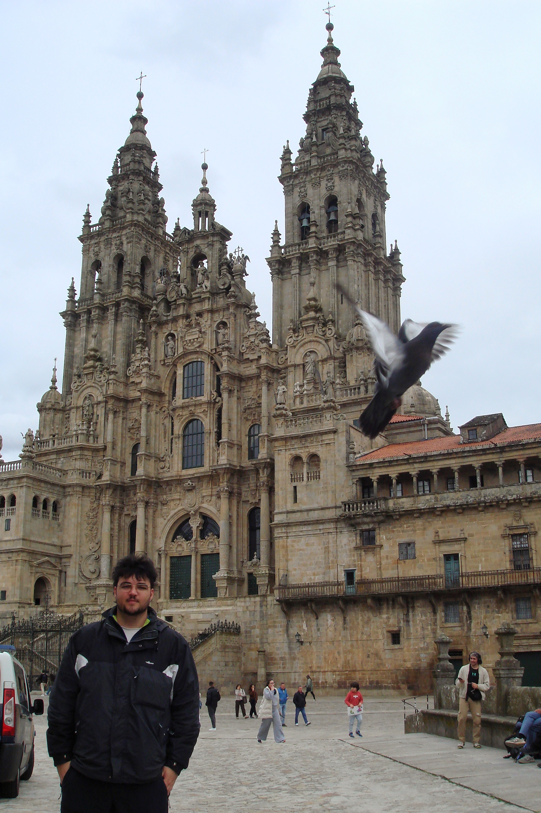
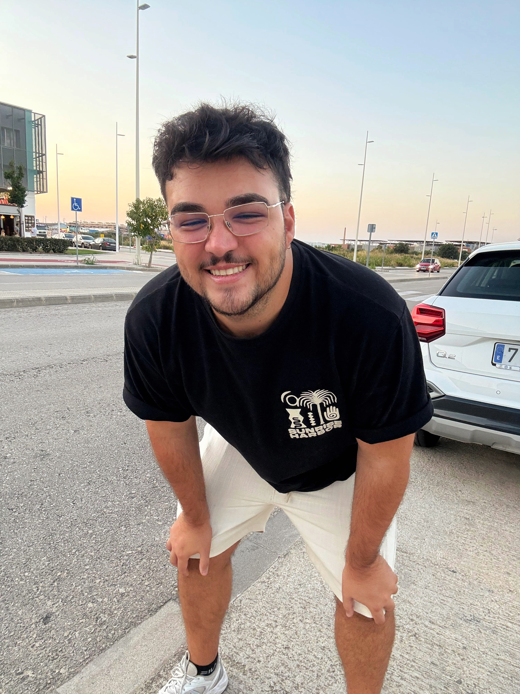
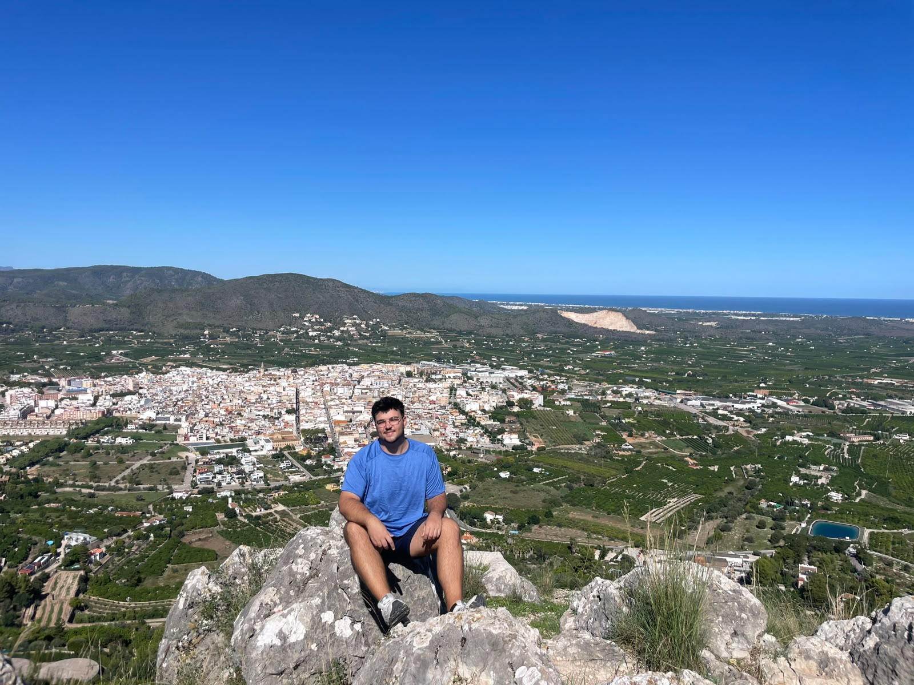
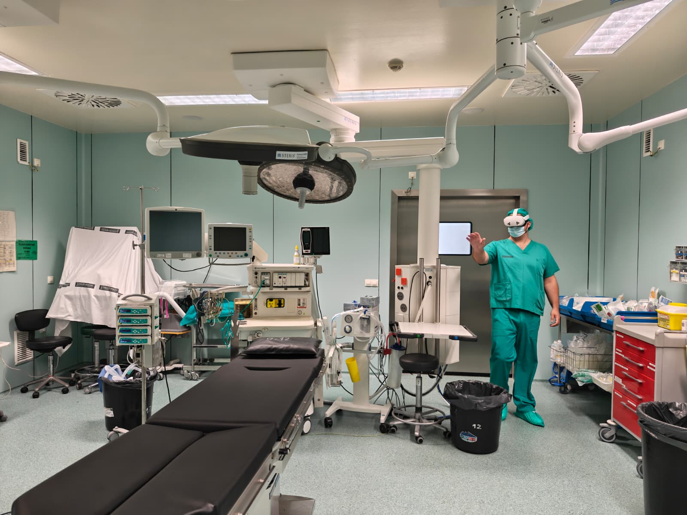
My career started in graphic design before moving into software development, real-time 3D and XR. That mix helps me test ideas, choose the right tools and take a project from the first sketch to the final result.
I’m always curious about new technology and what can actually be done with it, especially with Unity, new hardware and research. The best part is when it goes beyond the screen and becomes something useful in the real world.
Thanks for taking the time to look through my portfolio and learn more about me and my work! ♥
Valencia, Spain
aperezgfx@gmail.com
Valencia
Unity XR application development for digital health R&D, focused on healthcare, rehabilitation, training and industrial solutions.
Freelance
Valencia
Python training focused on tool development for artists and developers: Blender add-ons, Houdini tools and PySide interfaces integrated into Unity 6, Unreal Engine 5 and production pipelines. Clients include TechArt Worlds and Nodecraft.
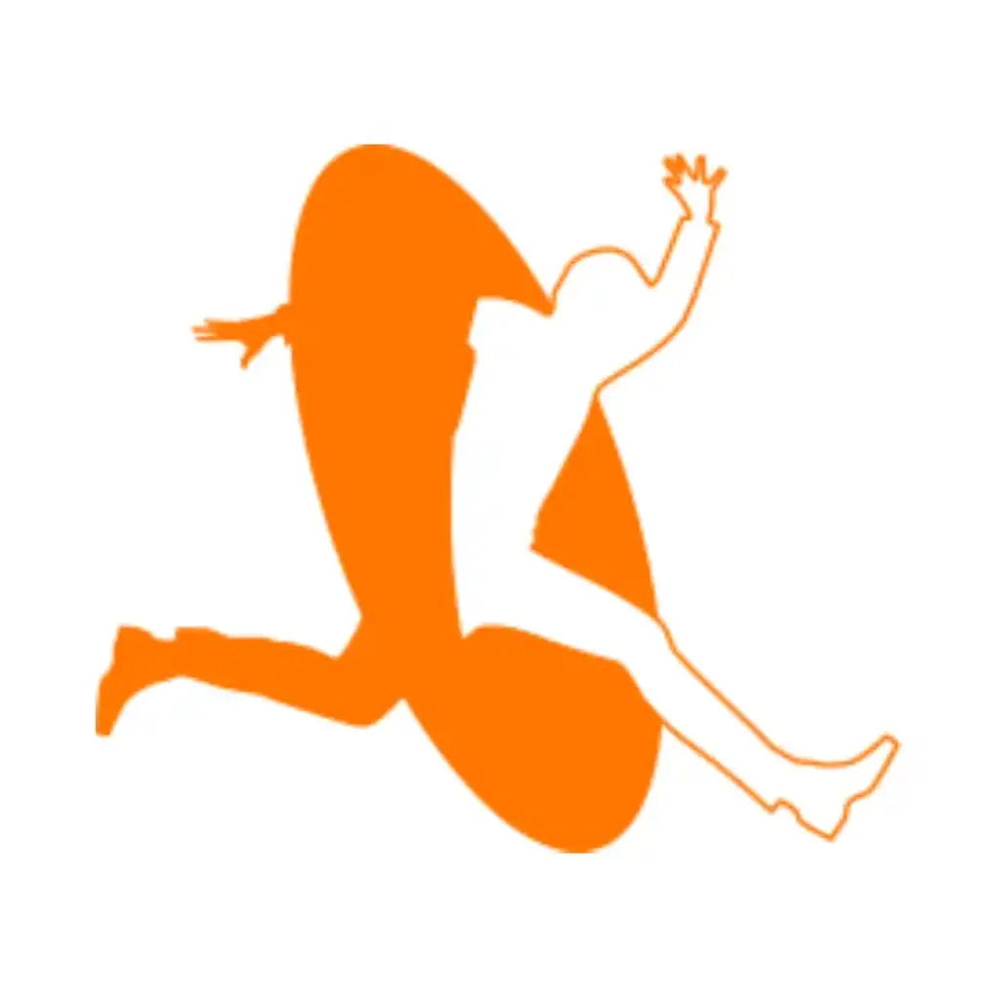
Madrid
Django web and REST API solutions, internal workflow tools with Python and PySide, and XR experiences in Unity.
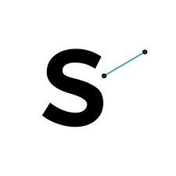
Madrid
Gamified cognitive training for Android and iOS apps built with Unity 3D, including neurorehabilitation exercises, .NET Entity Framework features and Python implementation tools.
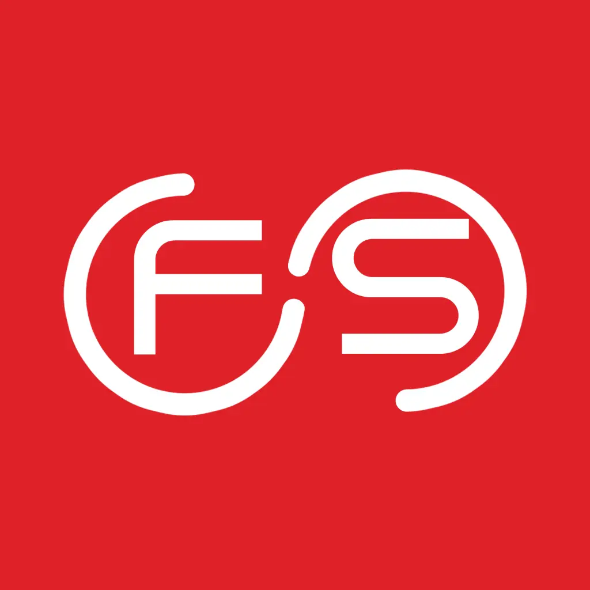
Paterna
R&D software leadership, desktop and XR applications for logistics and industry, backend systems with Python and Django, and process automation across departments.
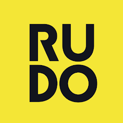
Valencia
REST APIs in Python and Django for mobile applications, using Docker, PostgreSQL and DigitalOcean.
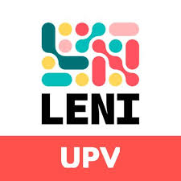
Valencia
Gamified rehabilitation exercises in Unity 3D with VR technologies for patients with reduced mobility.
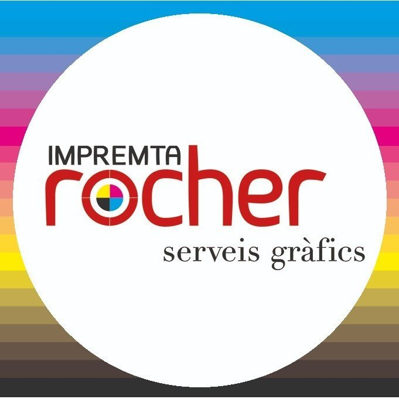
Beniarjó
Digital and print design, editorial layout and T-shirt graphics using Photoshop, Illustrator and InDesign.
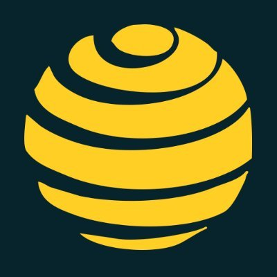
Master’s degree in technical art and 3D procedural generation.
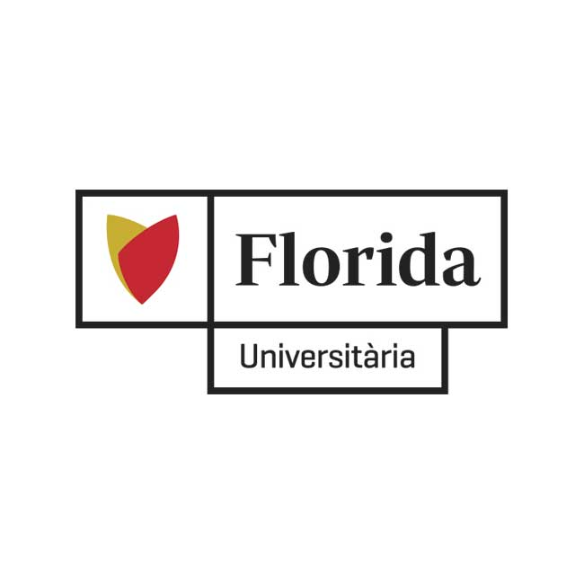
Advanced vocational degree in multiplatform application development.
Advanced vocational degree in 3D animation, games and interactive environments.
Intermediate vocational degree in digital prepress.